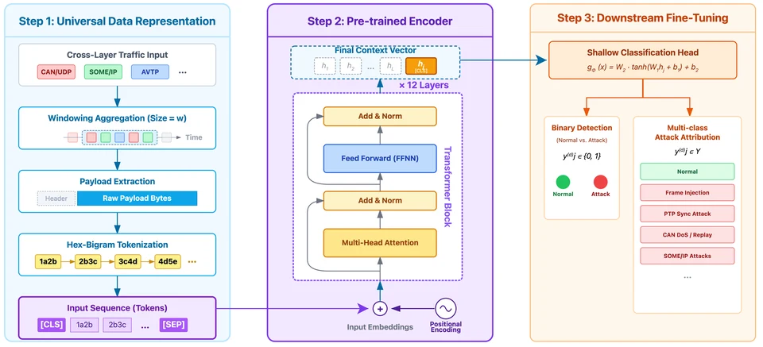

About Me关于我
I am an Eng.D student in Computer Technology at the School of Computer Science and Engineering, Sun Yat-sen University (SYSU), and a jointly trained Eng.D student in the Department of New Networks at Pengcheng Laboratory, where I work as a research assistant. I received my B.Eng. in Information Security (Secret Protection) from the School of Computer Science and Technology, Beijing Jiaotong University (BJTU), in 2024.
My research focuses on AI security, with an emphasis on LLM-based agents:
- AI & agent security (current focus) — how LLM agents that plan, call tools, and execute code can be manipulated through injected instructions and jailbreaks; systematic red-teaming to measure these risks at scale; and practical guardrails that monitor agent behavior and stop attacks before they cause harm.
- In-vehicle network security (previous work) — lightweight cross-layer intrusion detection for CAN and Automotive Ethernet (TSN, CAN-over-UDP, SOME/IP), which led to AutoGuard (Computer Networks 2026).
I also enjoy hands-on security: I was a global runner-up in the BCTF × DEF CON 30 Auto-driving Contest and won third prize in the 16th National Cybersecurity Competition.
我目前是中山大学计算机学院计算机技术专业的工程博士研究生， 同时作为联合培养博士生在鹏城实验室新型网络部担任研究助理。 2024 年本科毕业于北京交通大学计算机科学与技术学院，信息安全（保密技术）专业，获工学学士学位。
我的研究方向是人工智能安全，重点关注大模型智能体安全：
- AI 与智能体安全（当前重点）：研究具备规划、工具调用与代码执行能力的大模型智能体如何被注入指令和越狱攻击操纵；通过系统化的红队测试大规模度量这些风险；并构建能监控智能体行为、在攻击造成危害前将其拦截的实用防护机制。
- 车载网络安全（此前工作）：面向 CAN 与车载以太网（TSN、CAN-over-UDP、SOME/IP）的轻量级跨层入侵检测，代表工作为 AutoGuard（Computer Networks 2026）。
我也热衷于实战攻防，曾获 BCTF × DEF CON 30 自动驾驶竞赛全球亚军、第十六届全国网络安全竞赛三等奖。
News动态
- 2026.05: Our paper AutoGuard on unified cross-layer intrusion detection for Automotive Ethernet is published in Computer Networks (Elsevier, CCF-B). 论文 AutoGuard（车载以太网统一跨层入侵检测）发表于 Computer Networks（Elsevier，CCF-B）。
- 2025.09: Joined the Department of New Networks, Pengcheng Laboratory, as a jointly trained Eng.D student. 加入鹏城实验室新型网络部，作为联合培养博士生开展科研工作。
- 2025.08: Our patent application on CAN bus intrusion detection based on an adaptive unscented Kalman filter is published (CN120528633A). 发明专利申请《一种基于自适应无迹卡尔曼滤波的CAN总线入侵检测方法》公开（CN120528633A）。
- 2024.09: Started my Eng.D at the School of Computer Science and Engineering, Sun Yat-sen University. 进入中山大学计算机学院攻读工程博士学位。
- 2024.06: Received my B.Eng. from Beijing Jiaotong University. 本科毕业于北京交通大学，获工学学士学位。
Publications论文成果
Journal Papers期刊论文

Computer Networks (Elsevier), Vol. 286, 112394, 2026CCF-B
TL;DR: One byte-level Transformer detects attacks across TSN, CAN-over-UDP and SOME/IP traffic, then is distilled ~90× (132M → 1.5M parameters) for in-vehicle deployment. 简介：用一个字节级 Transformer 统一检测 TSN、CAN-over-UDP 与 SOME/IP 流量中的攻击，并蒸馏压缩约 90 倍（132M → 1.5M 参数）以便车载部署。
@article{shang2026autoguard,
title = {AutoGuard: Unified and Lightweight Cross-Layer Intrusion Detection
for Automotive Ethernet via Contextual Traffic Analysis},
author = {Shang, Wentao and Jin, Shuyuan and Han, Weihong},
journal = {Computer Networks},
volume = {286},
pages = {112394},
year = {2026},
publisher = {Elsevier},
doi = {10.1016/j.comnet.2026.112394}
}
Patents专利
Honors and Awards荣誉奖项
- 2023 Third Prize, 16th National Cybersecurity Competition (awarded by Zhejiang University) 第十六届全国网络安全竞赛 三等奖 （浙江大学）
- 2023 BJTU Elite Award (top 6 students university-wide, Beijing Jiaotong University) 北京交通大学英才奖 （全校前 6 名）
- 2022 Global Runner-up, BCTF × DEF CON 30 Auto-driving Contest (Baidu Security × UC Irvine) BCTF × DEF CON 30 自动驾驶竞赛 全球亚军 （百度安全 × 加州大学尔湾分校）
Education教育经历
- 2024.09 – present至今 Sun Yat-sen University, School of Computer Science and Engineering — Eng.D in Computer Technology · Guangzhou 中山大学 计算机学院 · 计算机技术 工程博士 · 广州
- 2025.09 – present至今 Pengcheng Laboratory, Department of New Networks — Jointly trained Eng.D student & Research Assistant · Shenzhen 鹏城实验室 新型网络部 · 联合培养博士生 / 研究助理 · 深圳
- 2020.09 – 2024.06 Beijing Jiaotong University, School of Computer Science and Technology — B.Eng. in Information Security (Secret Protection) · Beijing 北京交通大学 计算机科学与技术学院 · 信息安全（保密技术） 工学学士 · 北京
Professional Service学术服务
- Journal Reviewer:期刊审稿人： Neural Networks (2026), Chinese Journal of Electronics (2024)